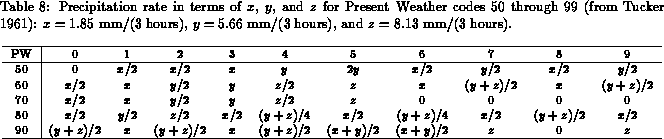
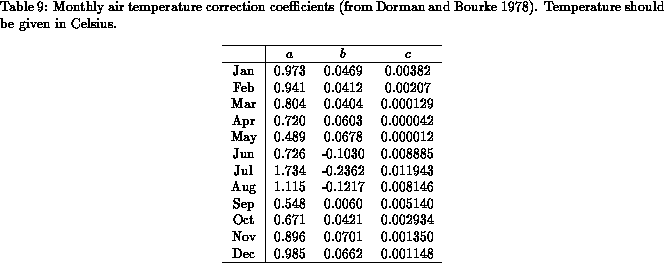

Accurate measurements of precipitation at sea are extremely difficult to take. As a result, precipitation rate is not included in ship reports. However, the type of weather the ship encounters is recorded and can be used as a precipitation proxy.
Precipitation rate is estimated using the method developed by Tucker (1961). The method uses the Present Weather (PW) information of standard ship reports and relates it to precipitation rate according to a regression formula.
The PW is reported at 3 hour intervals (usually less
frequently) with the results being coded
from 00 to 99. Tucker considers that weather associated with codes 50 to 99
contribute significantly
to precipitation. Based on data for 12 stations around the British Isles,
Tucker derived a regression formula which relates precipitation during the
3 hour sampling interval to the amount of light, moderate, or heavy
precipitation (,
, and
respectively). Each PW code is then expressed
as a linear combination of
,
, and
as shown in
Table 8. Tucker's estimates for these
coefficients are
mm,
mm, and
mm per 3
hour period.

Because the PW does not have an adequate range to accommodate the tropics, Dorman and Bourke (1978) derived an additional correction which takes into consideration the local air temperature:
Dorman and Bourke (1978) give correction coefficients ,
, and
for each month of the year. The coefficients are shown in
Table 9. The corrected values for
are used to
calculate monthly mean precipitation rate.

The precipitation fields obtained with the formula above showed an
unrealistic minimum in Spring when compared to estimates from NMC and
NASA/Goddard (Schubert et al. 1993) reanalyses, as well as
Arkin and Meisner's (1987) GOES Precipitation Index. This abrupt
decrease of precipitation in spring is not present in the
uncorrected , but is introduced, rather, by
the correction factor
. In order to remove
this spurious seasonal cycle in precipitation, we have used the annual
mean of Dorman and Bourke's (1978) correction factor in our
precipitation calculations: the monthly mean correction was calculated
from the 12 monthly climatologies of air temperature and averaged to
form the annual mean correction. This modification has little effect
on the annual mean precipitation and fresh water fluxes into the
ocean. The precipitation fields computed with Dorman and Bourke's
(1978) original approach will be made available upon request.